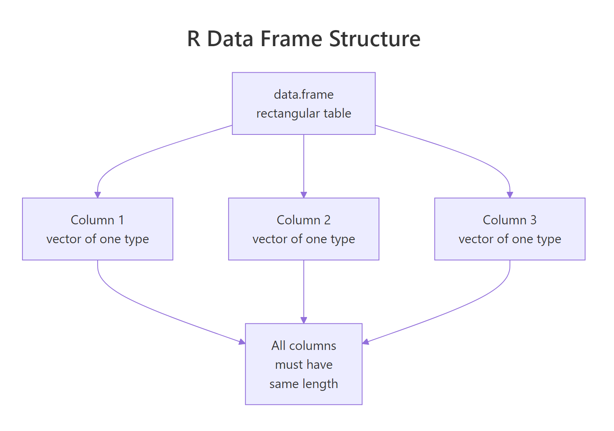

R Data Frames: Every Operation You'll Need, With 10 Real Examples
A data frame in R is a table of rows and columns — like a spreadsheet or a database table — where each column can be a different type. It's the single most important data structure for real analysis work, and it powers everything from lm() to ggplot2.
What is an R data frame and how do you build one?
Under the hood, a data frame is just a list of equal-length vectors, with each vector being one column. That's why columns can be different types (numeric, character, logical) but a column itself must be one type. Let's build one and look at it.
Five rows, four columns, two types (numeric and logical plus character). That's a typical data frame in a realistic shape. You'll build many of these from scratch for demos, tests, and quick prototypes — and many more from read.csv() when you load real data.

Figure 1: A data frame is a list of equal-length column vectors. Each column has a type; each row spans all columns.
[TIP] Older R (before 4.0) used
stringsAsFactors = TRUEby default, which silently turned character columns into factors. That default is gone, but you'll still see tutorials settingstringsAsFactors = FALSEexplicitly — harmless, but no longer required.
Try it: Build a data frame with three cities, their populations, and whether they're coastal.
How do you inspect a data frame?
Before you touch a new data frame, you want a quick profile: how big is it, what types are the columns, what's in the first few rows? R gives you a handful of inspection functions that together answer every "what am I looking at?" question.
str() is the workhorse — it tells you shape, column names, types, and a preview in one line per column. summary() gives five-number summaries for numeric columns and counts for factors/characters.
Try it: Print the names of all columns in employees using names() or colnames().
How do you select columns?
There are four ways to pull a column out of a data frame, and you'll see all of them in real code. Let's work through them, because the differences matter — especially when one returns a vector and another returns a one-column data frame.
The first three return the column as a plain vector. The fourth — selecting multiple columns — returns a smaller data frame. That asymmetry is a classic R gotcha: df[, "x"] is a vector, but df[, c("x", "y")] is a data frame.
[KEY INSIGHT] Use
df$colfor quick interactive work,df[["col"]]when the column name is in a variable, anddf[, cols](with a character vector) when you want a sub-data-frame with multiple columns.
Try it: Pull just the age column out of employees as a vector, then compute its mean.
How do you filter rows?
Filtering rows is the operation you'll do most often. In base R, you index with a logical vector in the row position: df[condition, ]. The comma is critical — it says "all columns." Leave it out and R gets confused.
Combine conditions with & (and) and | (or). Never use && or || — those are scalar operators for single TRUE/FALSE values, not vectors.
[WARNING]
df[df$x > 5](without the comma) silently picks columns whose position matches the logical vector'sTRUEs, not rows. Always include the comma:df[df$x > 5, ].
Try it: Filter employees to rows where salary is below 75000.
How do you add or modify columns?
Adding a column is the same syntax as selecting one — just assign into it. This works whether the column already exists (modify) or doesn't (create). The new column can be a constant, a vector, or a vectorized computation on existing columns.
ifelse() is the vectorized counterpart to the scalar if/else — it applies the condition element-by-element across the vector. To drop a column, assign NULL: employees$bonus <- NULL.
Try it: Add a column high_earner that is TRUE when salary is above 80000.
How do you sort and rank rows?
Sorting a data frame means reordering its rows by one or more columns. Base R uses order(), which returns the positions that would put a vector in sorted order. You then use those positions as a row index.
A negative sign in front of a numeric column reverses that column's sort order. For character/factor columns, wrap them in order(..., decreasing = TRUE) instead.
Try it: Sort employees by age ascending.
How do you summarize by group with aggregate()?
The "split-apply-combine" pattern — group rows by a column, compute something on each group, combine the results — is the core of most analyses. Base R's aggregate() does it in one call.
The ~ is formula syntax: "compute this on the left, grouped by that on the right." You can supply any function — sum, median, sd, or a custom one. For heavier aggregation work you'll eventually reach for dplyr::group_by() + summarise(), but aggregate() is perfect when you want zero dependencies.
[NOTE]
aggregate()drops rows where the grouping column isNA. If you need to keep them, convertNAto a sentinel string first.
Try it: Compute the maximum salary grouped by remote.
Practice Exercises
Exercise 1: Top earners by department
Build a data frame of 8 employees across 3 departments, then return the top earner in each.
Show solution
Exercise 2: Filter and summarize
From mtcars, return the mean mpg for 4-cylinder cars weighing under 2.5.
Show solution
Exercise 3: Add a categorical column
Add a column mpg_class to mtcars: "low" if mpg < 18, "mid" if 18-25, "high" if > 25. Then count the rows in each class.
Show solution
Putting It All Together
A complete mini-analysis on iris — load it, inspect, filter, add a derived column, sort, and summarize by species.
Five operations, five lines — and every single one is a base-R idiom you'll reach for daily.
Summary
| Operation | Syntax |
|---|---|
| Create | data.frame(col1 = ..., col2 = ...) |
| Inspect | str(), dim(), head(), summary() |
| Select column | df$col, df[["col"]], df[, "col"] |
| Filter rows | df[df$col > 5, ] — don't forget the comma |
| Add column | df$new <- ... |
| Drop column | df$col <- NULL |
| Sort | df[order(df$col), ] |
| Group summary | aggregate(y ~ g, data = df, FUN = mean) |
References
- R Language Definition — Data Frames
- Advanced R — Data Frames by Hadley Wickham
- R for Data Science — modern tidyverse perspective on tables
- Base R Cheat Sheet (RStudio)
- An Introduction to R — Chapter 6: Lists and data frames
Continue Learning
- R Lists: When Data Frames Aren't Flexible Enough — the more flexible cousin of data frames.
- R Vectors: The Foundation of Everything in R — understand the columns that data frames are built from.
- R Data Types: Which Type Is Your Variable? — know the types each column can hold.